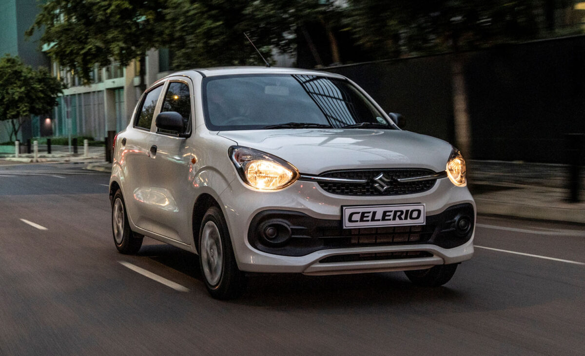
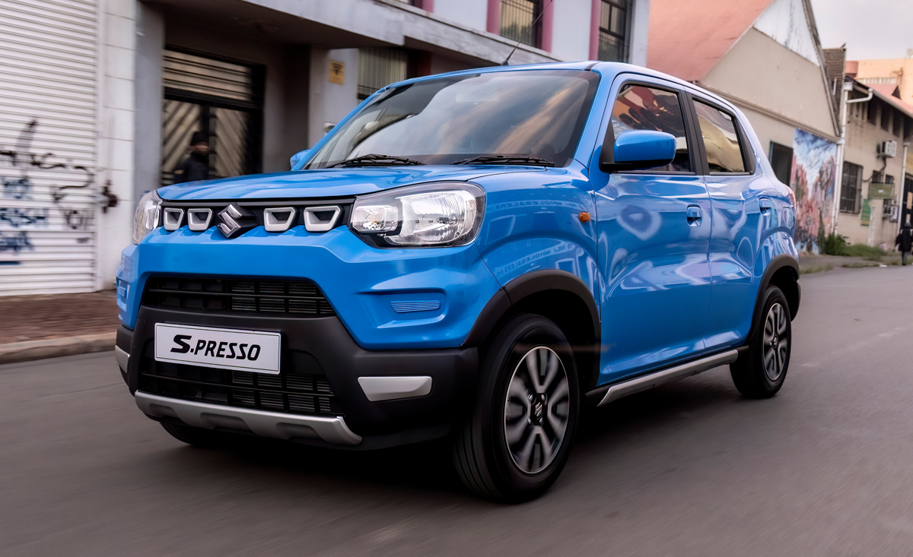

Our Cars On Sale
Toyota Agya 1.0 Auto – R211,400

Toyota’s most affordable entry, this small car carries a 4-speed automatic gearbox and a 1.0-litre powerplant producing 49kW and 89Nm.
As a result, the Agya is able to do 4.9l/100km on an average petrol cycle.
Equipment on the hatch then comprises 14-inch alloy wheels, push start, LED lights, fabric seats, and manual air conditioning.
The Toyota Agya comes with a 3-year/100,000km warranty and a 2-services/20,000km service plan.
Hyundai Atos 1.1 Motion Auto – R204,900

Hyundia’s affordable hatch is sold with a five-speed AMT, letting it do 5.9l/100km on an average fuel cycle. Its 1.1-litre engine then gives it a power ceiling of 50kW and 99Nm.
Features on the Atos, meanwhile, take the form of a multifunction steering wheel, 14-inch wheels, manual AC, vinyl and cloth upholstery, and a 7-inch media screen with smartphone pairing support.
Each purchase of the Hyundai Atos includes 5-year/150,000km warranty with an additional 2-year/50,000km powertrain warranty, as well as a 7-year/150,000km roadside assistance plan.
Suzuki Celerio 1.0 GL Auto – R213,900
Finally, there is the Suzuki Celerio with its five-speed AMT and a 1.0-litre powertrain with 49kW and 89Nm.
It also includes a stop-start system, making it the most economical vehicle on the list with an average fuel consumption of 4.2l/100km.
As far as add-ons are concerned, the small car is sold with 15-inch alloys, a multifunction steering wheel, rear parking sensors, manual AC, cloth seats, hill assist, and a 7-inch entertainment display with Apple CarPlay and Android Auto connectivity.
Each Suzuki Celerio is bundled with a 5-year/200,000km warranty and a 2-year/30,000km service plan.
Renault Kwid 1.0 Zen Auto – R197,999

Second on the list is the Renault Kwid, which offers a five-speed AMT transmission and a 1.0-litre drivetrain with 50kW and 91Nm.
Consequently, this hatch will manage 4.9l/100km on a combined fuel cycle.
Also included on the Kwid are rear parking sensors, a rear camera, 14-inch rims, a digital instrument cluster, cloth upholstery, manual airconditioning, and an 8-inch infotainment unit with smartphone pairing.
The Renault Kwid is sold with a 5-year/150,000km warranty.
Suzuki S-Presso 1.0 GL Auto – R176,900
Starting with the cheapest car in South Africa, the Suzuki S-Presso was recently updated with comes with a five-speed automated manual transmission (AMT) and a 1.0-litre engine.
Put together, this car will average 4.4l/100km on a combined cycle and an output of 49kW and 89Nm.
In terms of features, the GL variants include 14-inch wheels, rear park sensors, manual air conditioning, cloth seats, multifunction steering, stop-start-function, and two speakers, though a radio must be fitted at additional cost.
The Suzuki S-Presso includes a 5-year/200,000km warranty, and a 2-year/30,000km service plan.